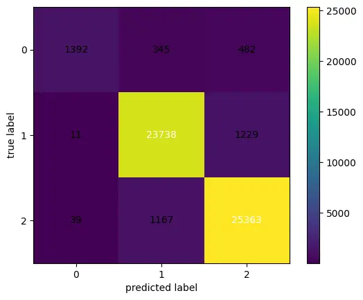

As a PhD in Computer Science and Engineering, I specialize in developing cutting-edge AI/ML solutions and GenAI innovations. My expertise spans Natural Language Processing, Machine Learning, and developing AI solutions that drive business value.
About Me
Experience
Visiting Faculty
Netaji Subhas University of Technology
Aug 2022 – Dec 2023
Research Assistant
Guru Gobind Singh Indraprastha University
Aug 2019 – Jul 2024
Intern
Defence Research and Development Organization, Ministry of Defence
Jun 2014 – Jul 2014
Skills
AI & Machine Learning
Natural Language Processing
Deep Learning
LLM-Finetuning
BERT
GPT
Transformer
Generative-AI
Data Science
Clustering
Feature Engineering
Statistical Modelling
SQL
Dimensionality Reduction
Programming
Python
C++
C
PyTorch
TensorFlow
Keras
NLTK
SpaCy
Pandas
Scikit-learn
NumPy
Hugging Face Transformers
Publications
CCheXR‐Attention: Clinical concept extraction and chest x‐ray reports classification using modified Mogrifier and bidirectional LSTM with multihead attention
Journal: International Journal of Imaging Systems and Technology 34 (1), e23025, 2024
A novel architecture CCheXR-Attention is proposed to extract the clinical features from the radiological reports and classify each report into normal and abnormal categories based on the extracted information. We have proposed a modified Mogrifier long short-term memory model and integrated a multihead attention method to extract the more relevant features. Experimental outcomes on two benchmark datasets demonstrated that the proposed model surpassed state-of-the-art models.
Aspect-based sentiment analysis of drug reviews using multi-task learning based dual BiLSTM model
Journal: Multimedia Tools and Applications 83 (8), 22473-22501, 2024
A novel model called Multi-task Learning based Dual Bidirectional LSTM Model (MLDBM) for ABSA of drug reviews. The MLDBM leverages BERT and incorporates a multi-head self-attention mechanism to produce aspect-specific representations which are further processed through the dual BiLSTM model. This enables the model to capture and analyze sentiments related to different aspects discussed in the reviews. We also introduce various modifications to the MLDBM to identify the constraints of the proposed model. The proposed model outperforms state-of-the-art models by achieving a performance gain of 8% to 12% on two benchmark datasets, demonstrating its effectiveness when compared to various baseline models. ABSA applied to drug reviews contributes to enhancing healthcare quality by considering different aspects of drugs as shared by consumers.
Optimizing healthcare system by amalgamation of text processing and deep learning: a systematic review
Journal: Multimedia Tools and Applications 83 (1), 279-303, 2024
This review aims to survey the text processing pipeline with deep learning methods such as CNN, RNN, LSTM, and GRU in the healthcare domain and discuss various applications such as clinical concept detection and extraction, medically aware dialogue systems, sentiment analysis of drug reviews shared online, clinical trial matching, and pharmacovigilance. In addition, we highlighted the major challenges in deploying text processing with deep learning to clinical textual data and identified the scope of research in this domain. Furthermore, we have discussed various resources that can be used in the future to optimize the healthcare domain by amalgamating text processing and deep learning.
DFM: deep fusion model for COVID-19 vaccine sentiment analysis
Conference: Proceedings of Third International Conference on Advances in Computer Engineering and Communication Systems: ICACECS 2022, 227-235, 2023
In this work, a novel architecture namely a deep fusion model (DFM) with a meta-learning ensemble method is proposed for sentiment analysis of public opinions on COVID-19 vaccines and omicron variant on Twitter. The proposed model employed using natural language processing with deep learning models such as LSTM, GRU, CNN, and their various combinations. The purpose of this study is to understand the public opinion around COVID-19 vaccines and omicron variant through the proposed model. In addition, the experiment demonstrated effectiveness with an accuracy of up to 88% in comparison with state-of-the-art models.
Research trends on fuzzy logic controller for mobile robot navigation: A scientometric study
Journal: Journal of Automation Mobile Robotics and Intelligent Systems 14, 2020
The present study shows the scientometric analysis of the publications on the fuzzy logic controller in autonomous mobile robot navigation during the period 2000 to 2018. The data is collected using Web of Science core collection database and analyzed at various levels such as Web of Science categories, publication years, document types, funding agencies, authors, research areas, countries or region, control terms, and organization to evaluate the research patterns. An extensive study is done to find the research trends in this area.
Projects
Depression Sentiment Classification with BERT and Hugging Face

This project involves developing a sentiment analysis model to classify text data related to depression using BERT (Bidirectional Encoder Representations from Transformers) and the Hugging Face library. The goal is to accurately identify the sentiment expressed in social media posts about mental health, specifically focusing on depression-related content. This model can be utilized to support mental health professionals and organizations in understanding public sentiment and identifying individuals who may need help.
Python
Pandas
PyTorch
Transformers
Scikit-learn
NumPy
Matplotlib
Seaborn
Radiology Report Classification

This project classifies radiology reports using deep learning models to determine if findings are normal or abnormal. It involves data exploration, splitting into training and testing sets, and preparing data for NLP with tokenization and numericalization. A language model is built to understand report context, and word embeddings convert text to numerical data for model training. The core is training a deep learning model for classification. This approach aids healthcare by providing quick, accurate analysis of radiology reports, enhancing diagnostic efficiency and patient care.
Pandas
NumPy
Fastai
Hugging Face Transformers
PyTorch
Scikit-learn
Matplotlib
Drug Review Classification using Machine Learning

This project focuses on classifying drug reviews using machine learning techniques to determine the sentiment of user reviews. By analyzing text data from drug reviews, the model aims to classify them into categories such as positive, neutral, and negative. This can help in understanding public opinion and experiences regarding various medications, assisting healthcare providers and pharmaceutical companies in improving their products and services.
PyTorch
Pandas
NLTK
Scikit-learn
Logistic Regression
Random Forest
SVM
Matplotlib
NumPy
Alzheimer's Medical Chatbot using LLM

This project involves the development of a medical chatbot designed to assist individuals with Alzheimer's disease and their caregivers. The chatbot utilizes a Large Language Model (LLM) based on GPT-2 to provide information, answer questions, and offer support related to Alzheimer's. The goal is to create a responsive and informative assistant that can help manage the daily challenges faced by those affected by Alzheimer's.
Pandas
Transformers
PyTorch
GPT
Scikit-learn
Matplotlib